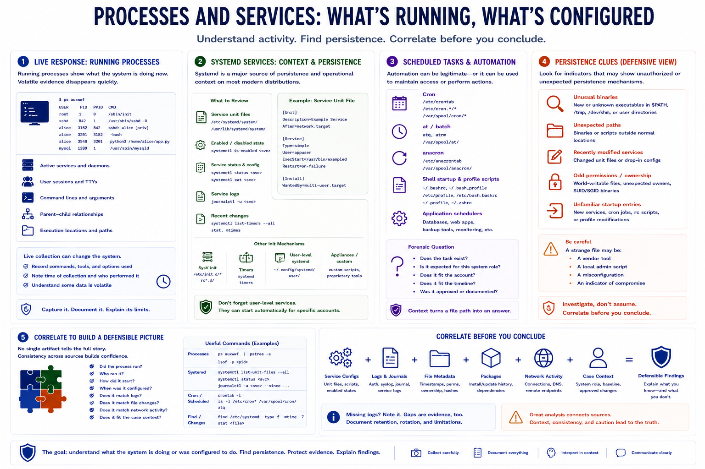

Process, Service, and Persistence Clues
Connecting to LMS... Progress: in progress

Narration
Processes and services show what a Linux system is doing or was configured to do. During live response, running processes can reveal active services, user sessions, command lines, parent-child relationships, and unusual execution locations. Because live collection can change the system, analysts should record what commands or tools were used and understand that volatile evidence may disappear quickly.
Systemd services are a major source of persistence and operational context on many distributions. Service unit files, timers, enabled states, service logs, and recent changes can show how software starts and under which account it runs. Older systems or specialized appliances may use init scripts, rc files, or custom startup mechanisms. User-level services may also exist and should not be overlooked when investigating account activity.
Cron jobs, at, anacron, shell startup files, profile scripts, and application-specific schedulers may indicate legitimate automation or activity that requires investigation. The forensic question is not simply whether a scheduled task exists. The question is whether it fits the system role, the account, the timeline, and the known administrative process.
Unusual binaries, unexpected paths, recently modified service definitions, odd permissions, and unfamiliar startup entries can be persistence clues at a defensive level. Analysts should avoid jumping straight to conclusions. A strange file may be a vendor tool, a local admin script, or an indicator of compromise. Correlate service configuration with logs, file metadata, package records, network activity, and case context before making a finding.